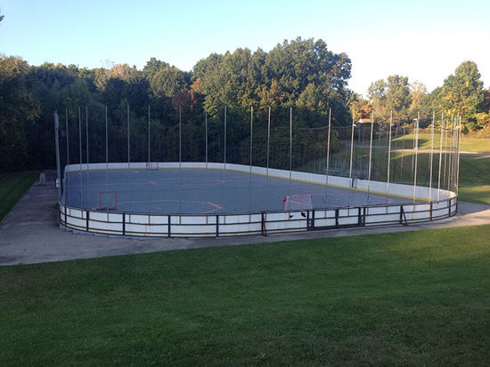
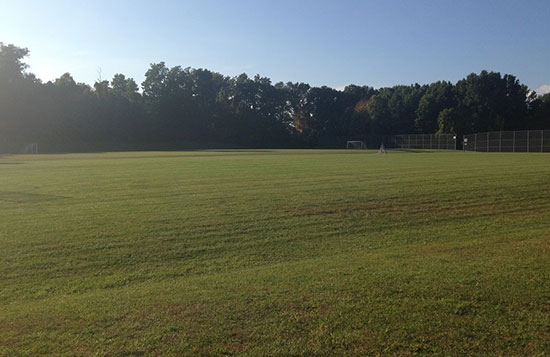

Sports at Dryer Road Park

Hockey & Lacrosse
Bring your pucks and pads for some exciting roller or floor hockey action anytime. The Dryer Road Park rink is open to the public anytime the park is open (see the contact page for hours). Occasionally Victor School box-lacrosse and roller hockey games are held here so be sure to check the rink schedule (posted at the rink).
Quick Details:
- Full-size hockey or lacrosse rink
- Actively maintained by park staff
- Open to the public and free to use
- Bleachers for spectating
- Bring your own gear

Multi-sport Fields
Come check out the enormous amount of open field space at Dryer Road Park. Whether you're looking to play a pick-up game of soccer or test out your new outdoor toys, this park has some wide open green fields for you.
Quick Details:
- Regulation soccer goals provided
- Approximately 3 full-size soccer fields worth of space
- Drones and other outdoor toys welcomed
- Dogs and other pets must be leashed
- Wide open space for kids to play